Multiexposition aux contaminants
La multiexposition est la coexposition à plusieurs nuisances (chimiques entre elles ou combinées à du bruit, des vibrations, des agents biologiques). Le RSST impose la règle de l'additivité pour les substances aux effets similaires. L'outil MiXie Qc opérationnalise cette règle. Les ototoxiques amplifient les pertes auditives causées par le bruit. En mine, la combinaison bruit + DPM + silice + fumées de soudage justifie une lecture multiexposition.
Table des matières
- Définitions et enjeux
- Types d'interactions toxicologiques
- Cadre réglementaire et règle d'additivité
- MiXie Qc
- Ototoxiques + bruit
- Application terrain
- Ressources
Définitions et enjeux
Multiexposition : exposition simultanée ou séquentielle à plusieurs nuisances, par des voies diverses.
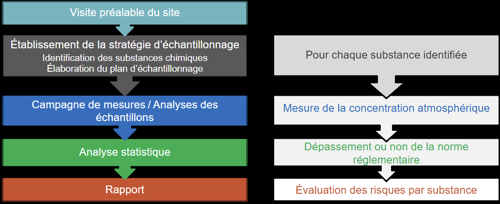
Toucher l'image pour l'agrandir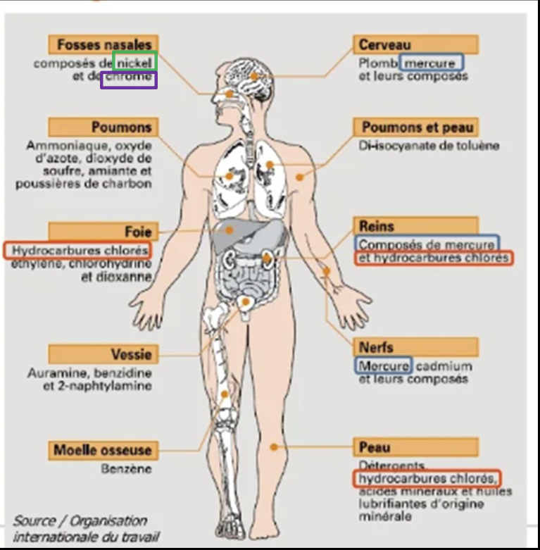
Toucher l'image pour l'agrandirTypes
- Plusieurs substances chimiques (le cas le plus fréquent).
- Chimique + biologique (par ex. agriculture).
- Chimique + physique (bruit, vibration, chaleur).
Enjeu : l'évaluation monosubstance (norme par norme) sous-estime le risque réel quand les substances ont le même organe-cible.
Types d'interactions toxicologiques
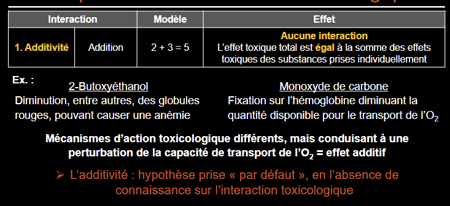
Toucher l'image pour l'agrandir| Interaction | Effet combiné | Exemple |
|---|---|---|
| Additivité | A + B = A + B | Solvants neurotoxiques (toluène + xylène) |
| Synergisme | A + B > A + B | Tabac + Amiante (cancer poumon, risque multiplicatif) |
| Potentialisation | B (inactif seul) augmente l'effet de A | Isopropanol + CCl4 |
| Antagonisme | A + B < A + B | Hydroxocobalamine vs cyanures |
| Indépendance | A et B agissent sur des cibles différentes | Bruit + nickel cutané |
Cadre réglementaire et règle d'additivité
Le RSST (s-2.1, r.13) stipule : « lorsque deux ou plusieurs substances sont présentes au poste de travail, et qu'elles ont des effets similaires sur les mêmes organes du corps humain, les effets de ces substances sont considérés comme additifs, à moins qu'il en soit établi autrement ».
Formule de l'additivité
Pour n substances
R = (C1 / VEMP1) + (C2 / VEMP2) + ... + (Cn / VEMPn)
- Si R ≤ 1 : conforme.
- Si R > 1 : dépassement même si chaque substance prise individuellement est sous sa VEMP.
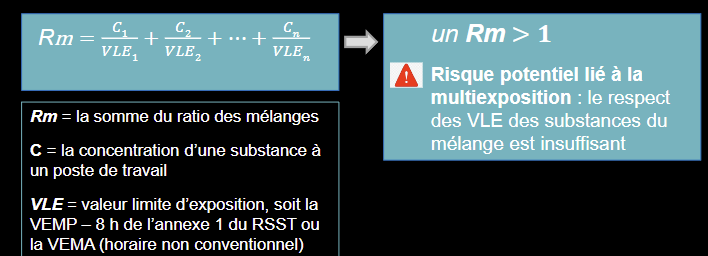
Toucher l'image pour l'agrandirMiXie Qc
MiXie (IRSST + Université de Montréal) : outil web qui aide à estimer le risque d'une exposition à plusieurs substances en milieu de travail.
Principes
- Approche multisubstance basée sur l'additivité par classe d'effets toxicologiques.
- 710 fiches du RSST annexe I.
- Recense les cas potentiels d'additivité par organe-cible.
- Analyse de 2e niveau : interactions binaires connues.
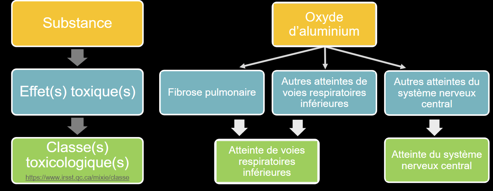
Toucher l'image pour l'agrandirCas particuliers (MiXie n'applique pas l'additivité)
- Cancérogènes/mutagènes : approche statistique, pas d'additivité automatique. Phase d'alerte si une substance est active.
- sensibilisants : pas d'additivité (mécanisme immunologique).
Exemple d'application
Atelier d'impression, mélange de solvants. Chacun individuellement < VEMP, mais MiXie active 4 classes d'effets (SNC, irritation, foie, etc.) et calcule R total > 100 % → risque réel pour la santé des travailleurs.
Voir Outils de priorisation des risques chimiques pour intégration dans une démarche globale.
Ototoxiques + bruit
Ototoxique : substance susceptible d'induire une toxicité sur l'oreille interne (cochlée), pouvant causer perte auditive, acouphènes, surdité.
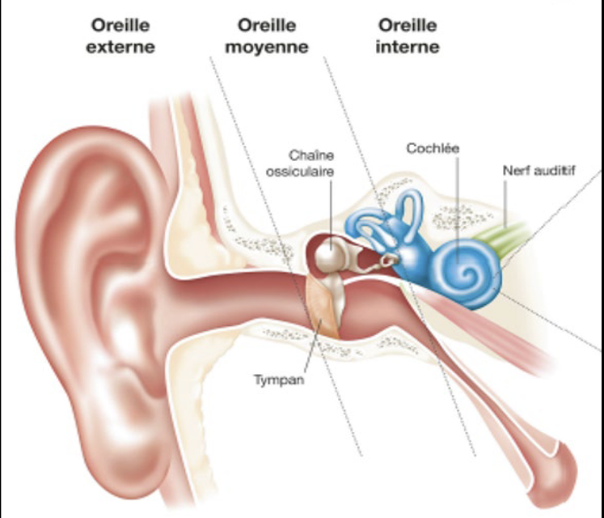
Toucher l'image pour l'agrandir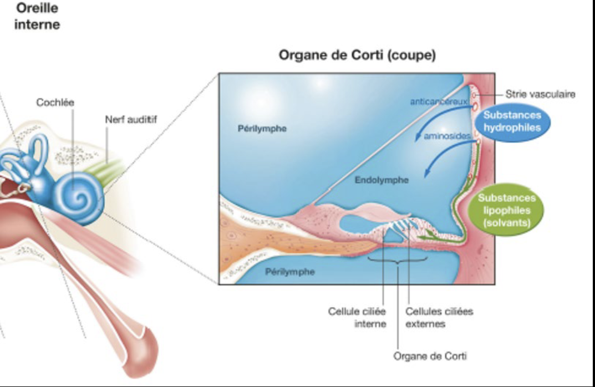
Toucher l'image pour l'agrandirMécanismes : lésion des cellules ciliées, atteinte du nerf auditif, perturbation vasculaire.
| Catégorie | Exemples |
|---|---|
| Métaux toxiques en milieu de travail | Plomb, mercure, arsenic, étain (organotains), manganèse |
| Gaz Asphyxiants simples et chimiques | CO, H2S, HCN |
| Solvants aromatiques | Toluène, styrène, xylène, éthylbenzène |
| Solvants autres | Trichloréthylène, n-hexane, CS2 |
| Pesticides | Organophosphorés, pyréthroïdes |
| Médicaments | Aminosides, cisplatine, salicylates fortes doses |
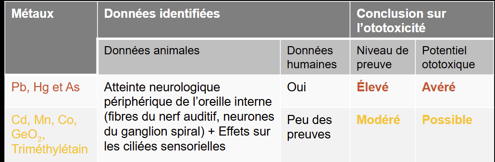
Toucher l'image pour l'agrandir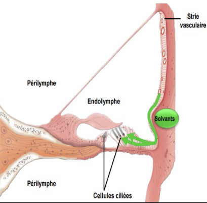
Toucher l'image pour l'agrandir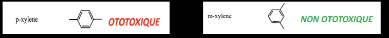
Toucher l'image pour l'agrandirInteraction bruit + ototoxique
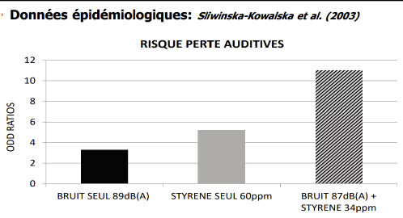
Toucher l'image pour l'agrandir- Effet synergique : exposition combinée > somme des expositions seules.
- Particulièrement bien documenté pour : toluène + bruit, styrène + bruit, CO + bruit.
- Conséquence : seuils d'action sur le bruit (85 dBA) à abaisser en présence d'ototoxiques.
Réglementation
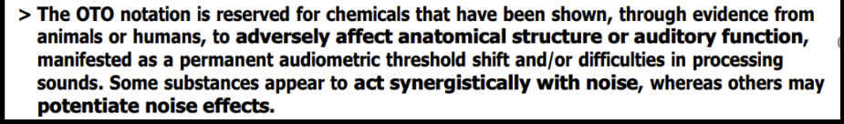
Toucher l'image pour l'agrandirACGIH : VLE pour ototoxiques avec note « ototoxique ». Au Québec, la liste explicite est en évolution ; consulter les notations RSST + IRSST.
Voir Bruit en milieu de travail pour la composante hygiène acoustique.
Application terrain
Le mineur typique cumule plusieurs expositions sur un quart
| Combinaison fréquente | Risque | Conséquence à anticiper |
|---|---|---|
| DPM + silice + NOx | Voies respiratoires multiples | Cancer poumon, irritation chronique, MPOC |
| Bruit + CO + solvants | Audition (synergie ototoxique) | Surdité professionnelle accélérée |
| Fumées soudage (Fe + Mn + Cr VI + Ni) | Poumon (additivité partielle) | Cancer, manganisme |
| Bruit + vibration + fatigue | Audition, troubles musculo-squelettiques, vigilance | Accidents, surdité |
| Solvants chlorés + alcool (extra-travail) | Foie | Hépatotoxicité et néphrotoxicité aggravée |
Démarche recommandée : appliquer MiXie à chaque profil de poste exposé à 2 substances ou plus aux effets similaires. Faire le lien avec l'audiométrie (programme de conservation de l'audition) pour identifier les profils ototoxiques.
Ressources
| Document | Type | Source |
|---|---|---|
| MiXie Qc | Outil web | IRSST + UdeM |
| Liste ototoxiques (notation OTO) | Référentiel | ACGIH, INRS ND 2227 |
| Audiogramme tonal | Outil clinique | Audiologiste |
| Procédure de réévaluation post-multiexposition | Procédure interne | À développer |
Articles wiki connexes
- Toxicité, dose-réponse et DL50
- Neurotoxicité, hématotoxicité et toxicité endocrinienne
- Asphyxiants simples et chimiques
- Solvants
- Outils de priorisation des risques chimiques
- VEA et normes RSST
- Bruit en milieu de travail
[[Wiki SST/00 - Accueil/�
Pages qui pointent ici (10)
- 🎯 Démarrage rapide, conseiller SST Toxicologie
- 🏠 Wiki Toxicologie, mines Toxicologie
- Articles internes Toxicologie
- Évaluation et priorisation chimique Toxicologie
- Neurotoxicité, hématotoxicité et toxicité endocrinienne Toxicologie
- Outils de priorisation des risques chimiques Toxicologie
- Pesticides Toxicologie
- Priorisation et substitution chimique Toxicologie
- Solvants organiques Toxicologie
- Toxicité par organe Toxicologie